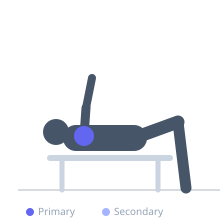
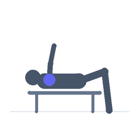

Exercise guide / Side-Lying External Rotation
Side-Lying External Rotation
Side-lying external rotation is a foundational rotator cuff rehabilitation exercise targeting the infraspinatus and teres minor — the primary external rotators of the glenohumeral joint. Performed with the elbow bent to 90 degrees and resting at the side, it isolates the posterior rotator cuff with minimal deltoid or periscapular compensation. It is a standard component of shoulder impingement, rotator cuff tear, and post-surgical rehabilitation programs.
Primary muscles
infraspinatus
teres minor
Secondary muscles
supraspinatus
Stabilizers
lower trapezius
Equipment
No Equipment (Bodyweight)
Optional
Resistance Band (Loop / Mini Band)


Starting position
- Lie on the non-working side. The working arm is on top with the elbow bent to 90 degrees and upper arm resting against the side of the torso. A small rolled towel may be placed under the upper arm to place the shoulder in neutral.
Setup
- No equipment required for bodyweight version. A light dumbbell (0.5–2 kg) or band may be added for progressive resistance.
Steps
- Step 1: Lie on the non-working side with the working elbow bent to 90 degrees, upper arm against the torso.
- Step 2: Starting position has the forearm resting across the abdomen.
- Step 3: Rotate the forearm upward toward the ceiling, keeping the elbow pinned to the side.
- Step 4: Stop when the forearm is parallel to the floor or slightly above.
- Step 5: Slowly return to the starting position with full control.
Coaching cues
- Keep the elbow pinned to your side throughout
- Move slowly — this is about quality, not load
- Think about rotating your palm to face the ceiling
Breathing
- Exhale on the external rotation (forearm rising). Inhale on return.
Range of motion
- Rotate until the forearm is parallel to the floor, or to the pain-free range. Do not force end-range if discomfort occurs.
Tempo
- 2-second up, 2-second down. 2–3 sets of 15–20 reps.
Common mistakes
- Lifting the elbow away from the side — the elbow must stay anchored to the torso
- Using too much weight, which causes the shoulder to shrug and involve the deltoid
- Moving too fast — this requires slow, deliberate movement to target the small cuff muscles
Safety
- If sharp pain occurs in the shoulder, stop immediately
- Start with no weight and add resistance only when pain-free movement is established
- Consult a clinician before starting if a rotator cuff tear has been diagnosed
Training
- strength: 15–20 reps
- strength: 2–3 sets
- Rest: {'strength': 60}